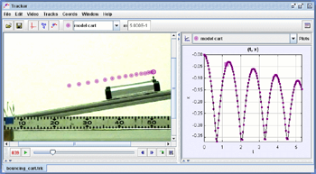

What is Tracker?
Tracker is a free video analysis and modeling tool built on the Open Source Physics (OSP) Java framework. It is designed to be used in physics education.
Tracker video modeling is a powerful way to combine videos with computer modeling. For more information see Particle Model Help or AAPT Summer Meeting posters Video Modeling (2008) and Video Modeling with Tracker (2009).

Installing and using Tracker
To install Tracker, download and run the appropriate installer using the links at the top of the page. Tracker comes with its own Java VM and Xuggle video engine. For help see Installer Help.
Supported languages: english, arabic, catalan, czech, danish, german, greek, spanish, finnish, french, hungarian, indonesian, italian, hebrew, korean, latvian, malaysian, dutch, polish, portuguese, russian, slovak, slovenian, swedish, thai, turkish, ukrainian, vietnamese, simplified chinese, traditional chinese. Interested in translating to another language? Please contact .
If you're new to Tracker, see Help Getting Started for a step-by step beginner's guide or Getting Started with Tracker for a video tutorial. For general help, use and search the built-in help files in Tracker, the online help in English or Slovenščina, or the downloadable pdf help files in English, Español, Ελληνικά, Italiano or Portuguese.
You can run Tracker from a USB drive without installing it on the host computer. See Installing Tracker on a USB or other portable drive for more information.
Supported Video Formats
Tracker can open the following types of videos:
- Videos with extension mp4, avi, wmv, flv, or mov
- Animated gif images
- Numbered sequences of jpg, png or gif images (e.g., ball00.jpg, ball01.jpg, ball02.jpg, ...). An image sequence may be packaged in a zip file.
- iPhone users should choose "Most Compatible" in Settings -> Camera -> Formats.
- Android users should turn off "High efficiency video" in Camera settings -> Advanced recording options.
For unsupported videos we recommend converting them to mp4 using the open source application HandBrake, available for Windows, Linux and MacOS platforms at https://handbrake.fr/. Choose the default "Fast 1080p30" preset, then in the Video tab choose "Constant Framerate". If you cannot or do not want to install software on your computer, you can use a web-based converter such as Cloud Convert. To create image stacks we recommend the Online Converter website.
Recent Tracker Installers and Jars
- 6.1.7 (Jun 2024): Win64 |
Recent MacOS |
Older MacOS |
Linux
- jars: 5.1.5 |
6.1.0 |
6.1.1 |
6.1.2 |
6.1.3 |
6.1.4 |
6.1.5 |
6.1.6 |
6.1.7 |
6.2.0
For Developers and Testers
- Tracker Source Code on GitHub
- Tracker 6 Javadocs online or download